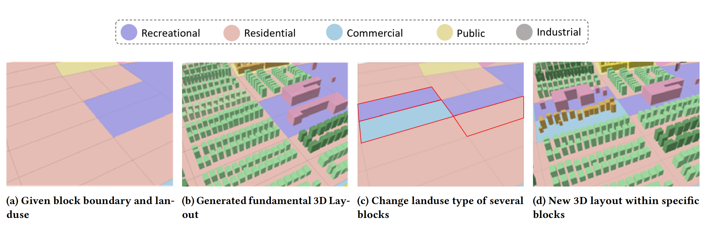
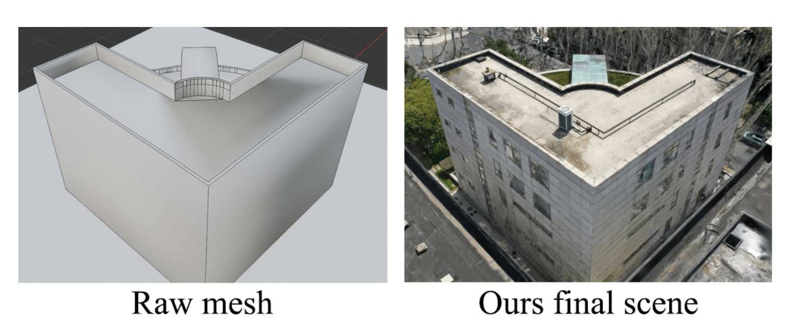
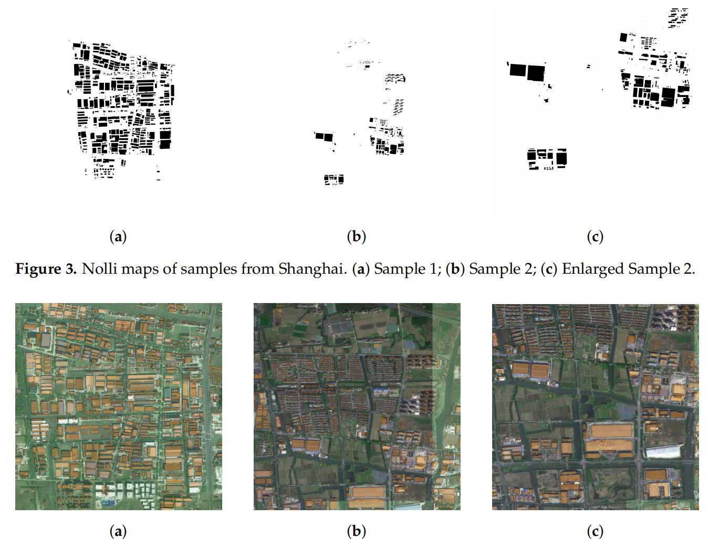
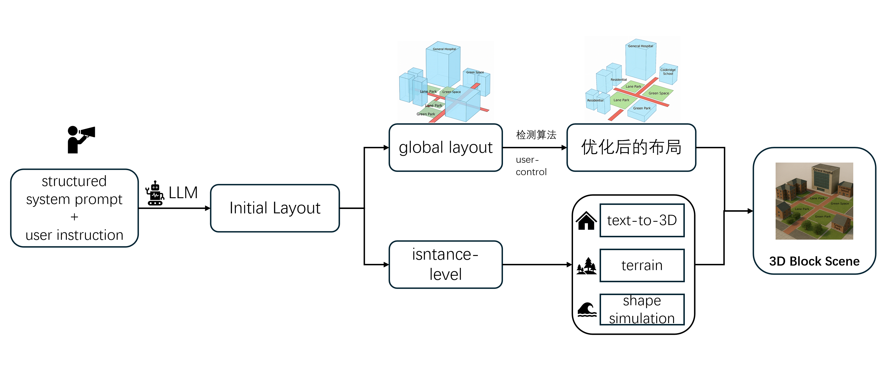
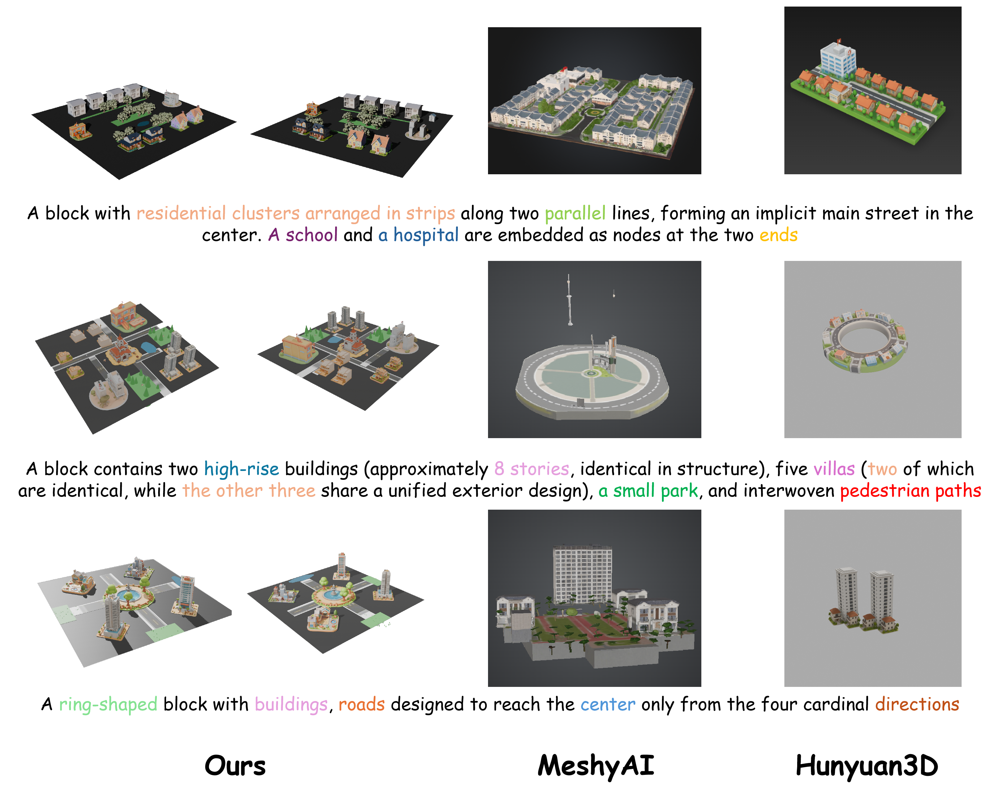
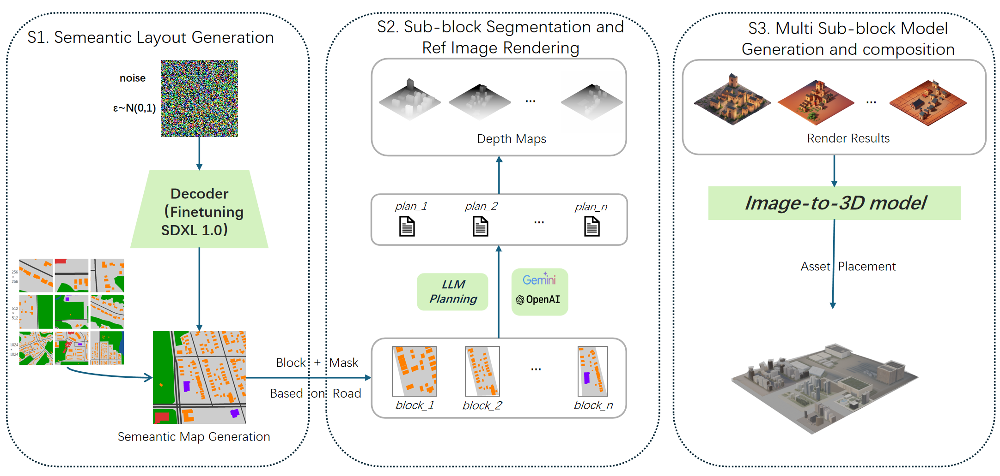
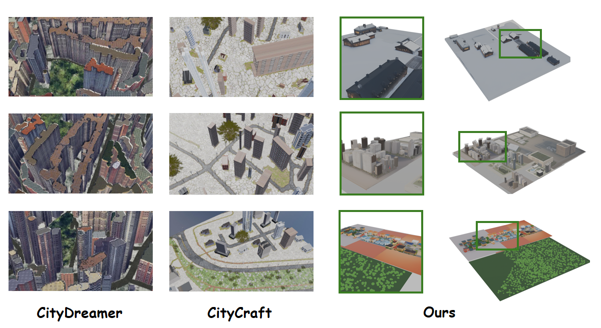
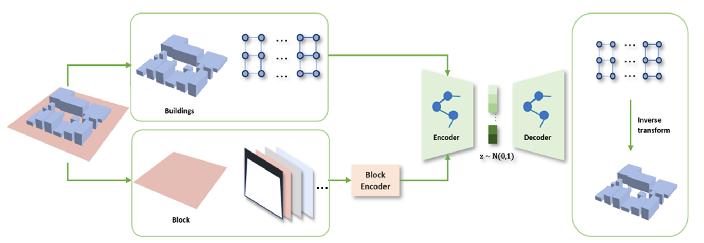
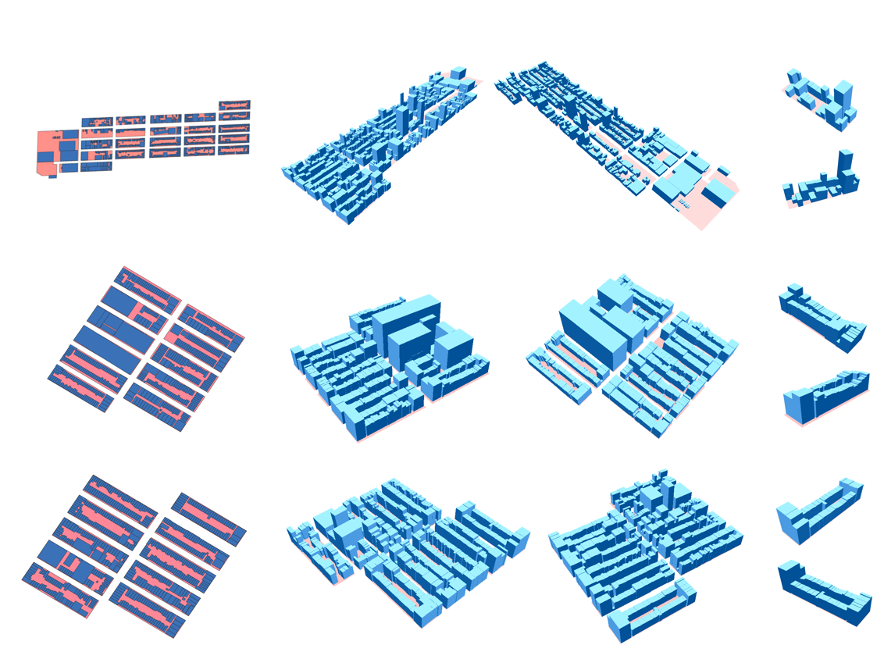

Controllable Generation of Large-Scale 3D Urban Layouts with Semantic and Structural Guidance
By integrating the geometry and semantics of land parcels as input conditions, a 3D vector layout of the city can be generated.
About me
Southeast University(SEU,985) · Master · 2026 Class Zhengzhou University(ZZU,211) · Bachelor · 2022 Class
My research focus the the area of urban visual computing which includes disciplines such as AI, computer vision, and urban model while I have extensive experience in urban scene generation and geospatial data analysis.
Publications

By integrating the geometry and semantics of land parcels as input conditions, a 3D vector layout of the city can be generated.

Using coarse architectural mesh models to enhance the reconstruction effect of buildings in 3DGS.

Proposing a novel image deformation process to enhance the morphological features of building complexes based on village boundaries,
Technological exploration
A text-driven method for generating small street scenes using LLM. Two-stage process combining 3DAIGC and detection optimization.


Semantic maps are used to model multiple urban elements, a dataset is constructed, and road network segmentation algorithms, LLM, Blender, and 3DAIGC are combined to generate scene outputs for larger scenes.


Geometric and semantic conditions are combined to generate 2.5D vector layouts of blocks, based on an improved rectangular graph structure.


Stay in touch
Feel free to contact me regarding academic collaborations, project exchanges, or any other topics of interest.